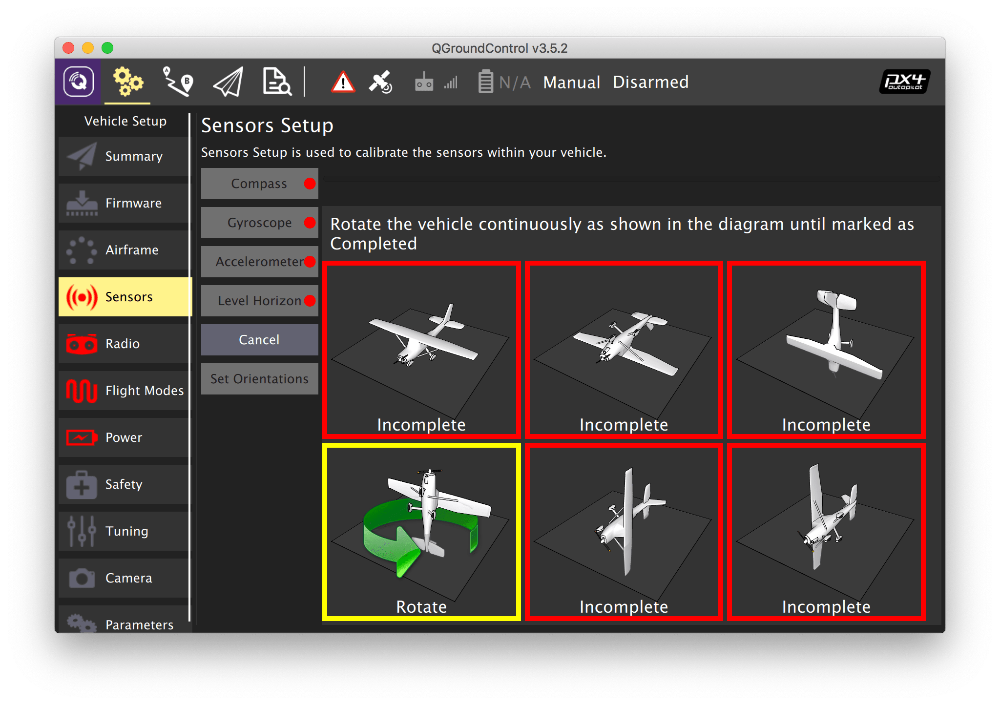
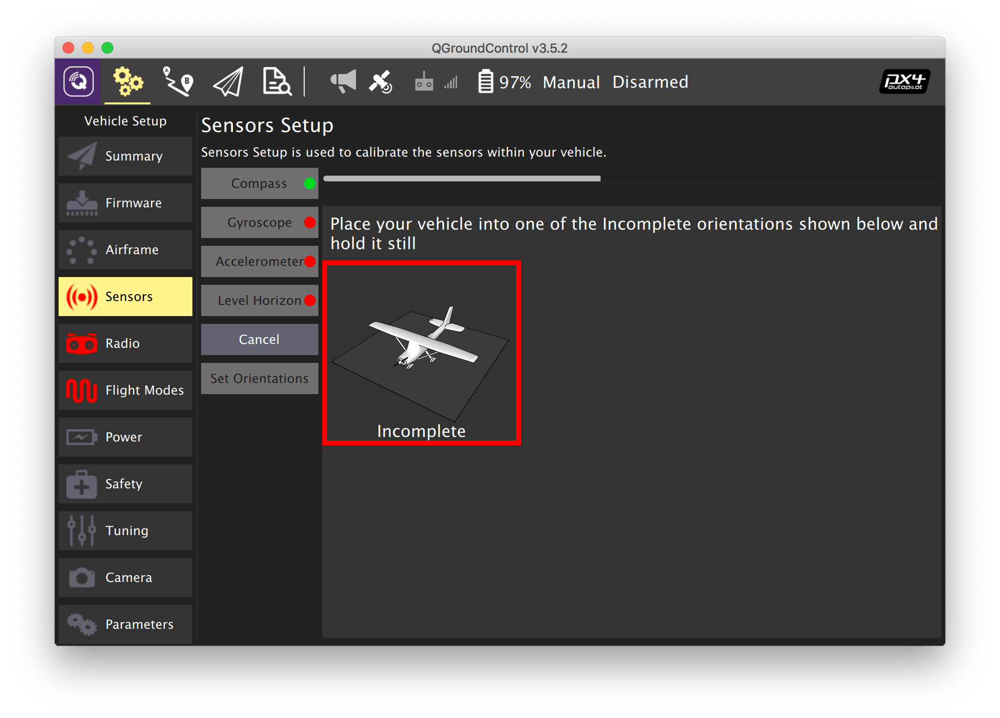
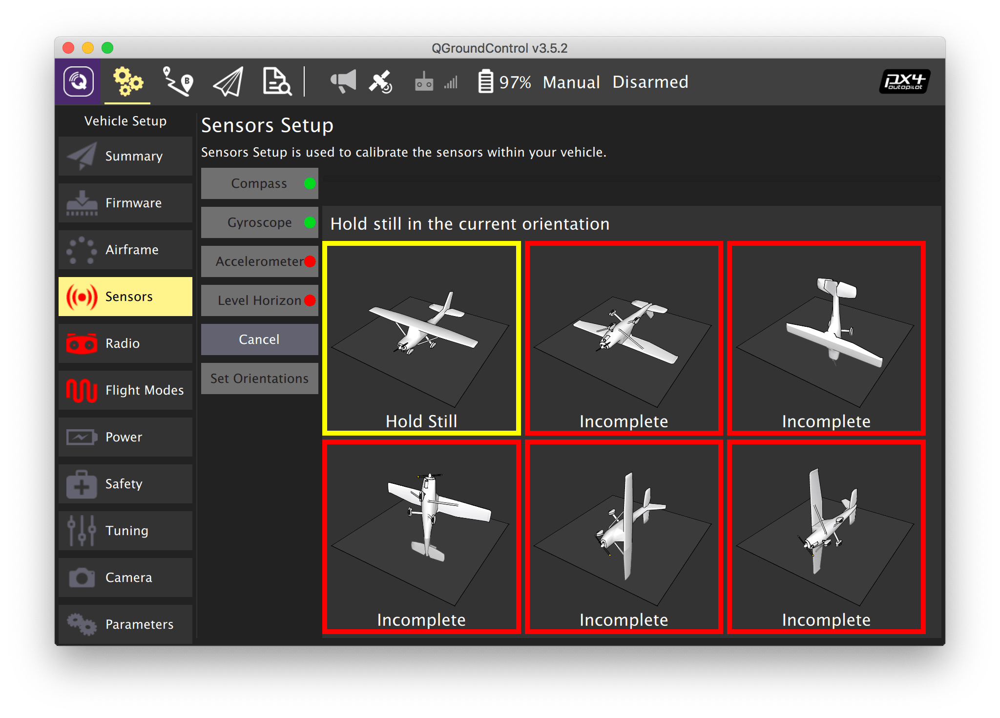
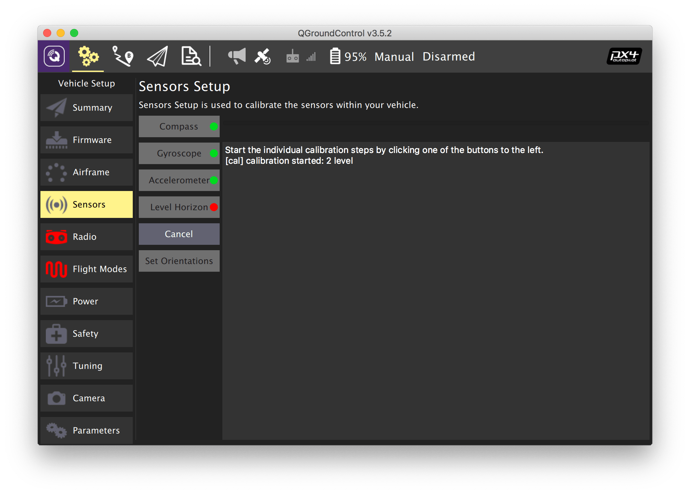

Калибровка датчиков
Чтобы откалибровать датчики зайдите во вкладку Vehicle Setup и выберите меню Sensors.
Компас

- Выберите меню Compass.
- Выберите ориентацию полетного контроллера – ROTATION_NONE при условии, что полетный контроллер ориентирован передом к носу квадрокоптера.
- Нажмите OK.
- Последовательно устанавливайте квадрокоптер в каждую из указанных ориентаций до появления желтой рамки.
- Вращайте квадрокоптер по направлению стрелки до появления зеленой рамки.
Подсказка Последние версии прошивки PX4 не поддерживают внутренний компас на полетном контроллере SKYRIS Pix. При появлении ошибки No mags found перейдите во вкладку Parameters, установите параметры SYS_HAS_MAG в 0, EKF2_MAG_TYPE в None и перезагрузите полетный контроллер (Tools => Reboot Vehicle).
Дополнительная информация: https://docs.px4.io/master/en/config/compass.html.
Гироскоп

- Выберите меню Gyroscope
- Установите квадрокоптер на ровную поверхность.
- Нажмите OK.
- Дождитесь окончания калибровки.
Подсказка Во время калибровки гироскопа квадрокоптер не должен менять своего положения, шататься и т. д.
Дополнительная информация: https://docs.px4.io/master/en/config/gyroscope.html.
Акселерометр

- Выберите меню Accelerometer.
- Выберите ориентацию полетного контроллера – ROTATION_NONE при условии, что полетный контроллер ориентирован передом к носу квадрокоптера.
- Последовательно устанавливайте квадрокоптер в каждую из указанных ориентаций до появления желтой рамки.
- Держите квадрокоптер неподвижно до появления зеленой рамки.
Дополнительная информация: https://docs.px4.io/master/en/config/accelerometer.html.
Уровень горизонта

- Выберите меню Level Horizon.
- Выберите ориентацию полетного контроллера – ROTATION_NONE при условии, что полетный контроллер ориентирован передом к носу квадрокоптера.
- Установите квадрокоптер на ровную поверхность.
- Нажмите OK.
- Дождитесь окончания калибровки.
Дополнительная информация: https://docs.px4.io/master/en/config/level_horizon_calibration.html.